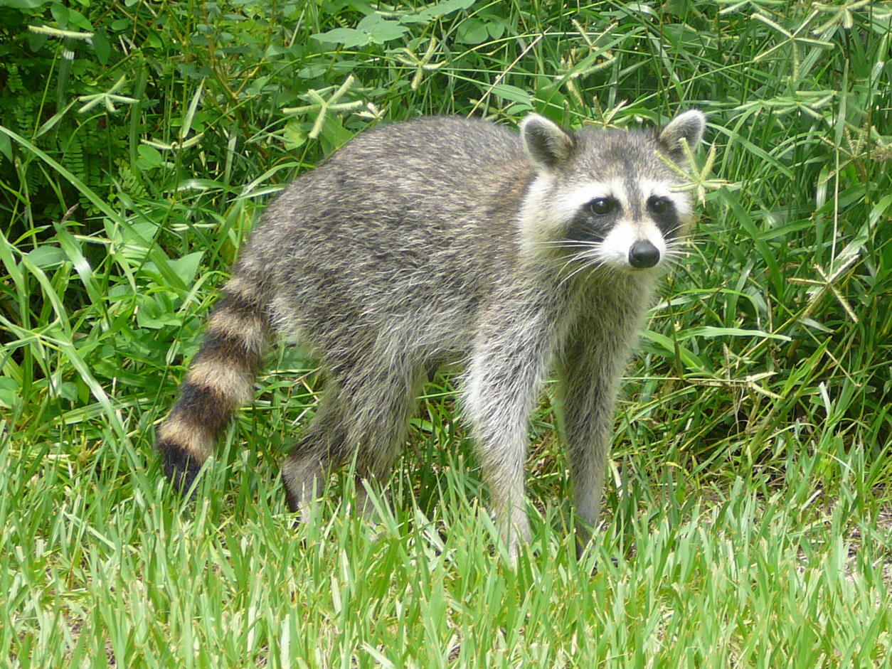
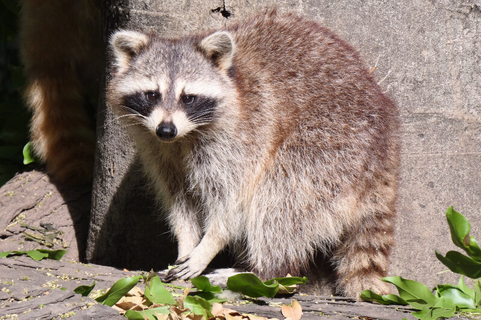
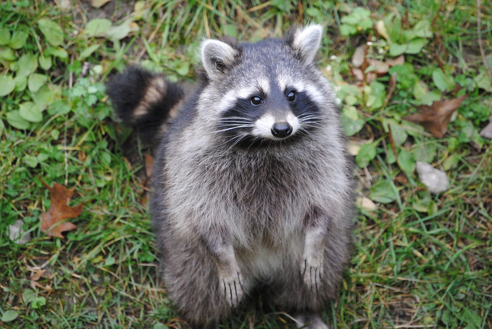
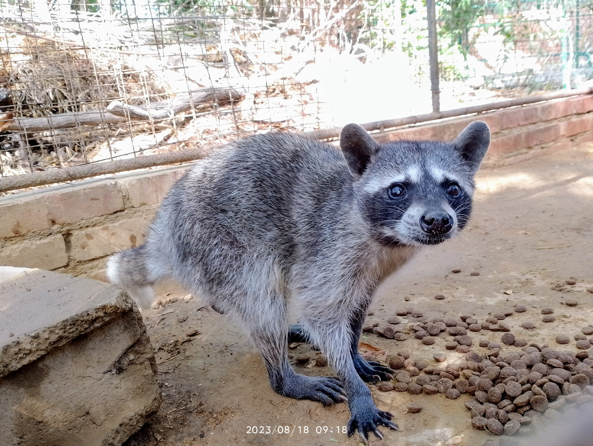

Los mapaches suelen habitar en bosques, especialmente aquellos cercanos a ríos, lagos o arroyos. Estos lugares les proporcionan refugio entre los árboles, abundante alimento y espacios seguros para descansar. También pueden utilizar huecos en los troncos como escondites.
Los mapaches se han adaptado bastante bien a vivir cerca de los humanos. Es común encontrarlos en parques, jardines, alcantarillas y edificios abandonados. Aprovechan los residuos y otros recursos disponibles para conseguir alimento, demostrando una gran capacidad para adaptarse a diferentes entornos.

Una de las características más reconocibles de los mapaches es la máscara negra que rodea sus ojos. Este patrón contrasta con el pelaje generalmente grisáceo o marrón de su rostro. Se cree que esta coloración ayuda a reducir el reflejo de la luz y mejora el contraste visual.
Los mapaches tienen una cola larga y bastante gruesa, cubierta de pelaje con varios anillos oscuros que alternan con zonas más claras. Generalmente presentan entre 5 y 7 anillos. Esta cola les ayuda a mantener el equilibrio y también es una de sus características más distintivas.
Sus patas delanteras son especialmente interesantes: tienen cinco dedos largos, delgados y muy sensibles al tacto. Gracias a ellos pueden sujetar alimentos, abrir recipientes, manipular objetos y explorar superficies. Aunque parecen manos pequeñas, no tienen pulgares oponibles como los humanos.
Los mapaches suelen frotar sus alimentos con agua antes de comerlos. Aunque parezca que están lavándolos, en realidad es un comportamiento relacionado con su sensibilidad táctil.
Las patas delanteras poseen cinco dedos muy sensibles que les permiten abrir recipientes, manipular objetos e incluso abrir cerraduras sencillas.
Pueden recordar cómo resolver ciertos problemas durante años e incluso descubrir mecanismos para conseguir comida.